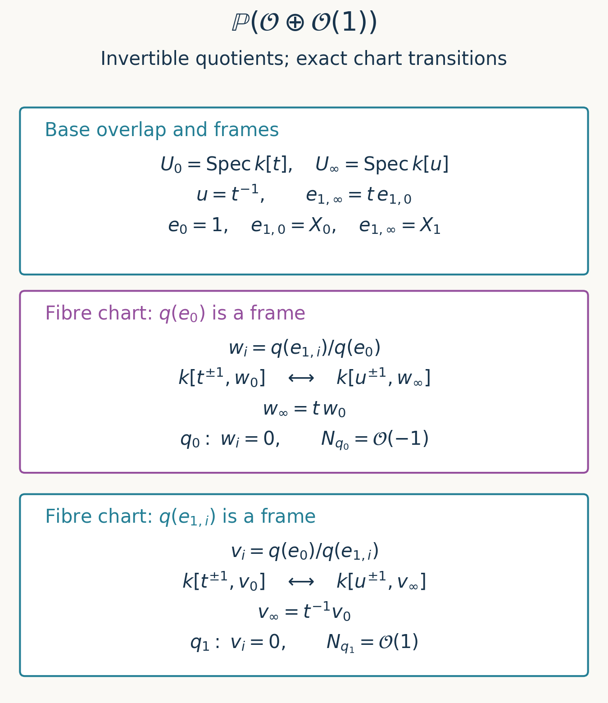

Projective space, relative Proj and maps to projective space
Written by GPT-6.1 Sol (OpenAI), in Codex at Ultra, October 2026. Self-checked by the writing AI, GPT-6.1 Sol. Public domain (CC0).
A point of projective space is often written as a list of coordinates up to a common scalar. Over a scheme, the scalar can vary from one open set to another. The coordinates then belong to an invertible sheaf rather than necessarily to the structure sheaf. This lesson proves that description, extends it to degree-one generated graded rings, and constructs relative Proj by gluing over the base. Projective bundles will parametrize invertible quotients throughout.
We use Proj of a graded ring, especially its chart construction, exact sheafification, and degree-one twisting formulas. Maps from any scheme to an affine scheme are determined by their maps on global functions, by Affine schemes, Theorem 4.1. Pullback of quasi-coherent modules and its right exactness were proved in Quasi-coherent sheaves on schemes, Theorem 3.1. No Noetherian or finite-generation hypothesis is implicit here. References [Stacks] and [Vakil] provide further context; their projectivization conventions must be checked separately.
1. Coordinates in an invertible sheaf
For an invertible sheaf \(L\) on \(T\), a section \(s\) does not vanish at \(t\) when its image in \(L\otimes\kappa(t)\) is nonzero. In a local frame write \(s=a e\). Nonvanishing means \(a\notin\mathfrak m_t\), so \(a\) is a unit near \(t\). Thus the nonvanishing locus \(T_s\) is open, and \(s\) itself is a frame there.
A family \(s_i\) generates \(L\) precisely when the map
\[ \bigoplus_i\mathcal O_T\longrightarrow L,\qquad (a_i)\longmapsto\sum_i a_i s_i \tag{1.1} \]is surjective. At a local ring a family generates a rank-one free module exactly when some coefficient is a unit: if they generate, a finite linear combination equals one, which cannot happen with every coefficient in the maximal ideal. Hence generation is equivalent to the opens \(T_{s_i}\) covering \(T\), even for an infinite family.
Theorem 1.1 (the functor of projective space). For every scheme \(T\), there is a natural bijection between morphisms \(T\to\mathbb P^n_{\mathbb Z}\) and isomorphism classes of data
\[ (L,s_0,\ldots,s_n),\qquad L\text{ invertible},\quad s_i\in\Gamma(T,L)\text{ generating }L. \tag{1.2} \]An isomorphism of data carries each indicated section to the corresponding section. The morphism associated with the data satisfies \(\varphi^*\mathcal O(1)\cong L\).
Proof. Write \(U_i=D_+(X_i)\). Its coordinate ring is \(\mathbb Z[X_0/X_i,\ldots,\widehat{X_i/X_i},\ldots,X_n/X_i]\). On \(T_{s_i}\), send \(X_j/X_i\) to \(s_j/s_i\). The affine mapping theorem produces a morphism \(T_{s_i}\to U_i\), even if \(T_{s_i}\) is not affine. The preimage of \(U_i\cap U_j\) is exactly \(T_{s_i}\cap T_{s_j}\), because \(s_j/s_i\) is a unit exactly there. On that intersection the ratios transform by
\[ \frac{s_k}{s_j}=\frac{s_k/s_i}{s_j/s_i}. \tag{1.3} \]These are the chart transitions of projective space, so the morphisms glue.
Conversely, pull back \(\mathcal O(1)\) and its sections \(X_i\) along \(\varphi\). On \(U_i\), \(X_i\) is a frame, and therefore its pullback is a frame on \(\varphi^{-1}U_i\). The pulled-back sections generate. Starting with (1.2), the local isomorphism \(\varphi^*\mathcal O(1)\to L\) sending \(X_i\) to \(s_i\) sends \(X_j\) to \((s_j/s_i)s_i=s_j\). Thus these isomorphisms agree on overlaps and recover all the data. Starting with \(\varphi\), reconstruction recovers both the preimages of the \(U_i\) and the maps on their coordinate rings, so recovers \(\varphi\). The formulas commute with pullback, proving naturality. \(\square\)
For a base scheme \(S\), the same statement describes \(S\)-morphisms \(T\to\mathbb P^n_S=\mathbb P^n_{\mathbb Z}\times S\), where the map \(T\to S\) is fixed. In particular, projective coordinates over a ring need not admit a single global choice of functions: the invertible quotient can be nontrivial.
2. The universal property of degree-one Proj
For an invertible \(L\), use the nonnegative section algebra
\[ \Gamma_*(T,L)=\bigoplus_{r\geq0}\Gamma(T,L^{\otimes r}). \tag{2.1} \]Multiplication comes from tensoring sections. This definition takes sections degree by degree; it makes no claim that global sections commute with arbitrary sheaf direct sums on a non-quasi-compact scheme.
Theorem 2.1. Suppose \(S=\bigoplus_{r\geq0}S_r\) is generated by \(S_1\) as an \(S_0\)-algebra. Morphisms \(T\to\operatorname{Proj}S\) correspond naturally to isomorphism classes of pairs
\[ (L,\psi),\qquad \psi:S\longrightarrow\Gamma_*(T,L) \tag{2.2} \]where \(L\) is invertible, \(\psi\) preserves degrees and units, and the sections \(\psi(S_1)\) generate \(L\). The degree-zero map specifies the composite \(T\to\operatorname{Spec}S_0\).
Proof. For \(f\in S_1\), let \(T_f\) be the locus where \(\psi(f)\) is a frame. These opens cover. Define a ring homomorphism
\[ S_{(f)}\longrightarrow\Gamma(T_f,\mathcal O_T),\qquad \frac{a}{f^r}\longmapsto\frac{\psi(a)}{\psi(f)^r},\quad a\in S_r. \tag{2.3} \]It is well defined without cancellation assumptions on \(S\). Equality of fractions is witnessed by a power of \(f\) annihilating their cross-multiplied difference. Applying \(\psi\), that power becomes an invertible frame on \(T_f\), so the normalized functions coincide. Sums and products are respected by the same normalization.
The induced map to \(D_+(f)\) has preimage of \(D_+(g)\) equal to \(T_f\cap T_g\): in this chart the defining function is \(g/f\), sent to \(\psi(g)/\psi(f)\). On this overlap (2.3) for \(f\) and \(g\) agrees in the common localized ring. The maps glue to \(\varphi:T\to\operatorname{Proj}S\).
In the reverse direction, \(S_r\) has a canonical map to \(\Gamma(\operatorname{Proj}S,\mathcal O(r))\): on \(D_+(f)\), an element \(a\in S_r\) gives \((a/f^r)f^r\), where \(f\) denotes the frame of \(\mathcal O(1)\). The twisting identities proved in the preceding lesson make these maps multiplicative. Pulling them back gives (2.2). Degree-one sections generate, since the opens \(D_+(f)\), \(f\in S_1\), cover. The local identification sending the pulled-back frame \(f\) to \(\psi(f)\) glues and recovers \(\psi\) in every degree by (2.3). Conversely those same fraction formulas recover a given morphism. This also proves naturality and uniqueness. \(\square\)
Degree-one generation can be infinite. It ensures that \(\mathcal O(1)\) is invertible; the weighted example in the preceding lesson shows why this condition cannot simply be omitted from this universal property.
When \(S=A[X_0,\ldots,X_n]/I\) for a homogeneous ideal \(I\), Theorem 2.1 says exactly that the coordinate sections satisfy every homogeneous equation in \(I\), as equations in the corresponding tensor powers of \(L\). For completeness this realizes \(\operatorname{Proj}S\) as a closed subscheme of \(\mathbb P^n_A\): on \(D_+(X_i)\), the map from the polynomial chart ring to \(S_{(X_i)}\) is surjective. A fraction in the latter ring lifts its homogeneous numerator to the polynomial ring. These quotient charts glue, and their closed immersions glue by the closed-immersion criterion proved in Schemes, gluing and immersions, Theorem 3.1.
Tensor products and the Segre map. If \(s_0,\ldots,s_a\) generate \(L\) and \(t_0,\ldots,t_b\) generate \(M\), their products generate \(L\otimes M\): near each point choose a frame from each family, whose tensor product is a frame. The associated map to \(\mathbb P^{(a+1)(b+1)-1}\) has coordinates \(s_it_j\). Applied to the pulled-back coordinate sections on \(\mathbb P^a_R\times_R\mathbb P^b_R\), this is the Segre map \([X_i],[Y_j]\mapsto[X_iY_j]\). It identifies the product with the closed subscheme defined by the two-by-two minors of the matrix \((Z_{ij})\). Indeed, on \(D_+(Z_{ij})\) those equations say
\[ \frac{Z_{kl}}{Z_{ij}}= \frac{Z_{kj}}{Z_{ij}}\frac{Z_{il}}{Z_{ij}}. \tag{2.4} \]Its chart ring is the polynomial ring in \(Z_{kj}/Z_{ij}\) for \(k\ne i\) and \(Z_{il}/Z_{ij}\) for \(l\ne j\): substitution using (2.4) gives an inverse to this presentation. This is exactly the chart \(D_+(X_i)\times_R D_+(Y_j)\) of the product. The charts cover the closed subscheme and their ratio formulas agree on overlaps. Thus the identification is schematic, over any ring \(R\), and its pulled-back hyperplane line is the tensor product of the two pulled-back \(\mathcal O(1)\)'s.
3. Relative Proj and arbitrary base change
Let \(\mathcal A=\bigoplus_{r\geq0}\mathcal A_r\) be a quasi-coherent graded \(\mathcal O_S\)-algebra. Its degree-zero part need not equal \(\mathcal O_S\). Quasi-coherence here means that each graded piece is quasi-coherent and multiplication respects the grading.
Lemma 3.1 (affine base change). If \(A\) is a nonnegatively graded \(R\)-algebra and \(R\to B\) is any homomorphism, then
\[ \operatorname{Proj}(A\otimes_R B) \cong\operatorname{Proj}A\times_{\operatorname{Spec}R}\operatorname{Spec}B. \tag{3.1} \]All twisting sheaves pull back under this identification, including when they are not invertible.
Proof. For \(f\in A_d\), \(d>0\), degree-zero localization has the module description
\[ A_{(f)}=\mathop{\rm colim}_{r\geq0} (A_{rd}\xrightarrow{\ f\ }A_{(r+1)d}). \tag{3.2} \]The map sends \(a\) at stage \(r\) to \(a/f^r\). Every fraction occurs and its equality relation is exactly equality at a later stage. Tensor product commutes with this colimit, as is seen from the presentation of a colimit by a direct sum modulo the transition relations. Also the degree \(j\) piece of \(A\otimes_R B\) is \(A_j\otimes_R B\). Consequently, as rings,
\[ (A\otimes_R B)_{(f\otimes1)}\cong A_{(f)}\otimes_R B. \tag{3.3} \]Products agree by multiplying representatives at sufficiently large stages. These are precisely the coordinate rings of the base-changed affine charts of \(\operatorname{Proj}A\).
The opens \(D_+(f\otimes1)\) cover the new Proj. At a relevant homogeneous prime, some positive-degree element is outside the prime. Express it as a finite sum \(\sum a_i\otimes b_i\) in one degree. If every \(a_i\otimes1\) belonged to the prime, the sum would also belong; therefore one such element is outside. Formula (3.3) respects localization on overlaps, so gluing the chart identifications proves (3.1). Replacing the stages in (3.2) by \(A_{rd+m}\), with multiplication by \(f\) and \(A_j=0\) for \(j<0\), proves the identical statement for \((A(m)_f)_0\). Sheafifying these module identifications proves the twisting assertion for every integer \(m\). All maps are canonical and commute with further base change. \(\square\)
Theorem 3.2 (relative Proj). There is a scheme \(p:\operatorname{Proj}_S\mathcal A\to S\), characterized by compatible isomorphisms
\[ p^{-1}(U)\cong\operatorname{Proj}\mathcal A(U) \quad\text{over every affine }U\subset S. \tag{3.4} \]Here \(\mathcal A(U)\) denotes \(\bigoplus_r\Gamma(U,\mathcal A_r)\). For every \(h:S'\to S\), there is a canonical isomorphism
\[ \operatorname{Proj}_{S'}(h^*\mathcal A) \cong S'\times_S\operatorname{Proj}_S\mathcal A. \tag{3.5} \]The twists \(\mathcal O(m)\) exist and obey the same pullback formula. If \(\mathcal A\) is generated in degree one over \(\mathcal A_0\), these twists are invertible.
Proof. If affine \(V\subset U\subset S\), quasi-coherence and the affine pullback formula give, degree by degree,
\[ \mathcal A(V)\cong\mathcal A(U)\otimes_{\mathcal O_S(U)}\mathcal O_S(V). \tag{3.6} \]The multiplication agrees because restriction respects multiplication. Lemma 3.1 therefore identifies \(\operatorname{Proj}\mathcal A(V)\) with the inverse image of \(V\) in \(\operatorname{Proj}\mathcal A(U)\), an open subscheme. These identifications compose correctly for nested affine opens: each map on a standard chart is the same localization and tensor map on fractions.
Choose an affine cover \(U_i\) of \(S\). Cover each \(U_i\cap U_j\), which need not be affine, by common affine opens \(V\). The preceding identifications glue on these \(V\) and give an isomorphism between the inverse images of \(U_i\cap U_j\) in the two Proj schemes. On triple intersections they satisfy the cocycle condition, checked on common affine opens by the fraction formulas. The scheme gluing theorem constructs \(p\). The same argument with any affine \(U\subset S\) proves (3.4). It also proves uniqueness with the specified affine identifications, independent of the chosen cover.
To prove (3.5), cover \(S'\) by affine opens \(V\) mapping into affine opens \(U\subset S\). On each such pair, the algebra of \(h^*\mathcal A\) is the tensor product in Lemma 3.1, by quasi-coherent pullback. That lemma identifies both sides of (3.5) over \(V\). The canonical formulas agree on overlaps and glue. The module part of the lemma first glues the twists in (3.4), then proves their arbitrary-base-change formula. Invertibility under degree-one generation is checked on these affine base charts using the preceding lesson, Theorem 3.2. \(\square\)
For a degree-one generated \(\mathcal A\), the relative version of Theorem 2.1 follows too: over a fixed \(f:T\to S\), morphisms \(T\to\operatorname{Proj}_S\mathcal A\) correspond to invertible \(L\) and multiplicative degree-preserving maps
\[ f^*\mathcal A_r\longrightarrow L^{\otimes r} \tag{3.7} \]whose degree-one map is surjective; the degree-zero map is compatible with the structure maps. Indeed, over affine \(U\subset S\), morphisms from the pulled-back module associated to \(\mathcal A_r(U)\) are equivalent to \(\mathcal O_S(U)\)-linear maps into \(\Gamma(f^{-1}U,L^r)\). This follows from the free presentation of that module and the pullback adjunction, without assuming \(f^{-1}U\) affine. Apply Theorem 2.1 there. On overlaps its uniqueness glues the morphisms and the data. Thus no commuting of an infinite direct sum with global sections of \(T\) is needed.
4. Projective bundles with the quotient convention
For any quasi-coherent \(\mathcal E\) on \(S\), form its symmetric algebra \(\operatorname{Sym}^{\bullet}\mathcal E\): the tensor algebra modulo the relations \(v\otimes w-w\otimes v\). Its pieces are quasi-coherent by the tensor and cokernel results of the ninth lesson. A linear map from \(\mathcal E\) into the degree-one part of a commutative graded algebra extends uniquely to an algebra map: send a tensor to the product of its images, then factor through the displayed relations. This proves both the symmetric algebra's universal property and its compatibility with arbitrary pullback, by applying the same construction after tensoring.
Define
\[ \mathbb P(\mathcal E)=\operatorname{Proj}_S \operatorname{Sym}^{\bullet}\mathcal E. \tag{4.1} \]Theorem 4.1 (invertible quotients). For a fixed \(f:T\to S\), \(S\)-morphisms \(T\to\mathbb P(\mathcal E)\) correspond naturally to surjections
\[ q:f^*\mathcal E\twoheadrightarrow L,\qquad L\text{ invertible}, \tag{4.2} \]up to isomorphism of the quotient. There is a universal quotient \(p^*\mathcal E\twoheadrightarrow\mathcal O(1)\) on \(\mathbb P(\mathcal E)\). Furthermore,
\[ \mathbb P^n_S\cong\mathbb P(\mathcal O_S^{\oplus(n+1)}). \tag{4.3} \]Proof. The algebra in (4.1) has degree zero \(\mathcal O_S\) and is generated in degree one. By (3.7) and the symmetric algebra's universal property, giving its multiplicative map into the powers of \(L\) is exactly giving the linear map (4.2). The required degree-one generation condition is exactly surjectivity of that map. This proves the bijection. The degree-one universal sections in Theorem 2.1 glue over the base to give the universal quotient; pulling it back recovers (4.2).
On affine \(U=\operatorname{Spec}R\), the symmetric algebra of \(\mathcal O_U^{n+1}\) is \(R[X_0,\ldots,X_n]\). Lemma 3.1 identifies its Proj with \(U\times\mathbb P^n_{\mathbb Z}\). These identifications agree on overlaps and prove (4.3). \(\square\)
No finite-type condition on \(\mathcal E\) was used. If it is locally free of rank \(r>0\), its projective bundle is locally \(\mathbb P^{r-1}\) over the base. If it has rank zero on an open set, the projective bundle there is empty. Formula (3.5) and compatibility of symmetric algebras give \(\mathbb P(h^*\mathcal E)\cong S'\times_S\mathbb P(\mathcal E)\). Over a field the points are one-dimensional quotients of the vector space. Authors using one-dimensional subspaces often put a dual into their definition; (4.1) fixes our convention explicitly.
5. Curves and a ruled surface
Example 5.1 (the conic). On \(\mathbb P^1_k\), the sections \(s^2,st,t^2\) of \(\mathcal O(2)\) generate: wherever \(s\), respectively \(t\), is a frame, its square is a frame. They define
\[ \nu_2:[s:t]\longmapsto[s^2:st:t^2]. \tag{5.1} \]The equation \(X_0X_2-X_1^2=0\) holds as an equation of sections. In this closed conic, \(D_+(X_0)\) has coordinate ring \(k[v]\), with \(X_1/X_0=v\), \(X_2/X_0=v^2\). Likewise \(D_+(X_2)\) has ring \(k[w]\), with \(X_1/X_2=w\), \(X_0/X_2=w^2\). They cover: a prime containing \(X_0,X_2\) also contains \(X_1\). Their overlap has \(w=v^{-1}\). The map (5.1) is the chart isomorphism from \(\mathbb P^1_k\) to this conic, so is a closed immersion. Its pulled-back \(\mathcal O(1)\) is \(\mathcal O(2)\), as the universal property predicts. This works in every characteristic.
Example 5.2 (the twisted cubic). The generating sections \(s^3,s^2t,st^2,t^3\) of \(\mathcal O(3)\) define \(\nu_3:\mathbb P^1_k\to\mathbb P^3_k\). Put
\[ J=(X_0X_2-X_1^2,\ X_0X_3-X_1X_2,\ X_1X_3-X_2^2). \tag{5.2} \]All three relations hold on these sections. The closed scheme \(C=\operatorname{Proj}k[X_0,X_1,X_2,X_3]/J\) is covered by \(D_+(X_0)\) and \(D_+(X_3)\): a prime containing both contains \(X_1^2,X_2^2\), hence all four coordinates. On the first chart (5.2) gives \(X_1/X_0=v,\ X_2/X_0=v^2,\ X_3/X_0=v^3\); the chart ring is exactly \(k[v]\), since substitution defines its inverse presentation. On the second chart it gives \(X_2/X_3=w,\ X_1/X_3=w^2,\ X_0/X_3=w^3\). The overlap again has \(w=v^{-1}\). Thus \(\nu_3\) identifies \(\mathbb P^1_k\) with the closed subscheme \(C\), and its pulled-back twist is \(\mathcal O(3)\). We established the scheme structure by chart rings, rather than just checking the set of points.
Example 5.3 (directions on a punctured plane). On \(U=\mathbb A^2_k\setminus\{(0,0)\}=D(x)\cup D(y)\), the sections \(x,y\) generate \(\mathcal O_U\). They define \([x:y]:U\to\mathbb P^1_k\), whose chart functions are \(y/x\) and \(x/y\). The pullback of \(\mathcal O(1)\) is trivial even though the morphism varies with the direction. The sections do not generate at the origin; Exercise 6 proves that this particular morphism cannot extend there by changing its presentation.
Example 5.4 (a Hirzebruch surface). Let \(S=\mathbb P^1_k\), \(\mathcal E=\mathcal O_S\oplus\mathcal O_S(1)\), and \(F=\mathbb P(\mathcal E)\). It is a \(\mathbb P^1\)-bundle. The two projections of \(\mathcal E\) onto its summands yield two sections of \(F\to S\). The gluing can be seen explicitly. Write \(t=X_1/X_0\), \(u=t^{-1}\) on the base, and use the frames \(e_{1,0}=X_0\), \(e_{1,\infty}=X_1\) of \(\mathcal O(1)\). Thus \(e_{1,\infty}=t e_{1,0}\); the frame \(e_0=1\) of \(\mathcal O\) stays fixed. For a quotient \(q\), on the fibre chart where \(q(e_0)\) is a frame put
\[ w_0=\frac{q(e_{1,0})}{q(e_0)},\qquad w_\infty=\frac{q(e_{1,\infty})}{q(e_0)}=t w_0. \tag{5.3} \]On the other fibre chart put \(v_i=q(e_0)/q(e_{1,i})\), giving \(v_\infty=t^{-1}v_0\). On the overlap of the two fibre charts, \(v_i=w_i^{-1}\). Each base affine chart therefore carries two affine planes, glued in the fibre direction by this inversion, and across the base by (5.3). The first projection is the section \(w_i=0\); the second is \(v_i=0\). Exercise 5 computes their fibres and normal bundles directly.

Figure 1. Exact gluing data for Example 5.4. The ring isomorphisms are on the base overlap \(u=t^{-1}\), with the base coordinate inverted. The displayed fibre coordinates are defined on the charts where the indicated quotient sections are frames; on their mutual overlap, \(v_i=w_i^{-1}\). The two zero sections belong to different fibre charts. Their conormal and normal bundles follow from these precise transition factors (Solution 5); this is a chart schematic, not a drawing of all points of the surface. Original CC0 figure; reproducible source: figure_sources/hirzebruch_quotient_charts.py. See [Stacks] for the general projective-bundle construction and [Vakil], Section 17.2, for ruled surfaces.
6. Graded exercises
Exercise 1 — easy. Verify the scheme-theoretic image of \([s:t]\mapsto[s^2:st:t^2]\), and compute its pulled-back hyperplane bundle.
Exercise 2 — medium. Show that every morphism \(\operatorname{Spec}R\to\mathbb P^n_{\mathbb Z}\) for a local ring \(R\) factors through at least one standard chart. Express it by a unimodular coordinate vector, up to a unit.
Exercise 3 — medium. Describe the action of \(\operatorname{PGL}_{n+1}(R)\) on projective-space quotient data. Account for projective matrices whose coordinate line is nontrivial, as well as matrices in \(\operatorname{GL}_{n+1}(R)\).
Exercise 4 — medium. Compute arbitrary base change of \(\operatorname{Proj}_S\mathcal A\), its twists, and \(\mathbb P(\mathcal E)\) by standard chart rings. Explain why flatness is unnecessary.
Exercise 5 — hard. For \(F=\mathbb P(\mathcal O\oplus\mathcal O(1))\to\mathbb P^1_k\), determine the fibres and the two sections from the summand quotients. Show that they are disjoint closed immersions, and compute their normal bundles.
Exercise 6 — hard. Prove that the morphism \([x:y]:\mathbb A^2_k\setminus\{0\}\to\mathbb P^1_k\) cannot extend to \(\mathbb A^2_k\). Explain why choosing a different invertible sheaf would not repair it.
7. Complete solutions
Solution 1. Example 5.1 identifies the source, as a scheme, with the closed conic \(V_+(X_0X_2-X_1^2)\). A closed immersion's scheme-theoretic image is its target closed subscheme, by Closed subschemes and scheme-theoretic images, Theorem 4.1, or by its quotient rings on the two charts. The pulled-back universal generating sections are \(s^2,st,t^2\), so Theorem 1.1 identifies the pullback with \(\mathcal O(2)\). Merely checking the quadratic relation would give containment, while the chart isomorphisms prove equality including scheme structure.
Solution 2. The image of the closed point belongs to some \(U_i\). Its inverse image is an open containing the maximal ideal of \(R\). Any such open contains a principal neighbourhood \(D(a)\) of that point; then \(a\) is a unit, so \(D(a)=\operatorname{Spec}R\). Thus the entire morphism factors through \(U_i\). Its quotient line is consequently trivial, framed by \(s_i\). In this frame the coordinates \((a_0,\ldots,a_n)\) include \(a_i=1\). More generally they generate the unit ideal, equivalently at least one is a unit in the local ring. Changing the frame multiplies all coordinates by a unit, and Theorem 1.1 proves that this is exactly the equivalence relation.
Solution 3. Put \(N=n+1\). A scheme model of \(\operatorname{PGL}_N\) is the determinant nonvanishing open in \(\mathbb P^{N^2-1}_{\mathbb Z}\). By Theorem 1.1 its \(R\)-points are represented by an invertible module \(M\) and a matrix giving an isomorphism
\[ \alpha:R^N\xrightarrow{\sim}M\otimes_R R^N, \tag{7.1} \]up to isomorphism of \(M\). Indeed, the determinant is a section of \(M^{\otimes N}\); its nonvanishing means it is a frame everywhere. After locally framing \(M\), the usual adjugate formula proves that this is equivalent to (7.1). Its entries generate \(M\), since otherwise they would all vanish in some residue fibre and so would the determinant. Conversely these conditions give a point in the displayed open.
Tensoring the line modules and composing the matrices defines multiplication, locally ordinary matrix multiplication. The inverse uses the dual line and \(1_{M^{-1}}\otimes\alpha^{-1}:R^N\to M^{-1}\otimes R^N\); identity uses \(M=R\) and the identity matrix. These constructions satisfy the group laws on local frames and thus globally, giving the projective linear group model. Locally framing \(M\) lifts every such projective matrix to an invertible matrix, and two lifts differ by a scalar unit. Conversely local lifts differing by scalar units glue their coordinate lines and matrices. This identifies the model with the usual sheaf quotient of \(\operatorname{GL}_N\) by scalar units, explaining the name \(\operatorname{PGL}_N\).
For a quotient \(q:\mathcal O_T^N\twoheadrightarrow L\) on an \(R\)-scheme \(T\), pull (7.1) to \(T\) and take the quotient
\[ \mathcal O_T^N\xrightarrow{\ 1\otimes\alpha^{-1}\ } M_T^{-1}\otimes\mathcal O_T^N \xrightarrow{\ 1\otimes q\ }M_T^{-1}\otimes L. \tag{7.2} \]Both arrows have the required isomorphism or surjectivity property. The construction respects isomorphisms of \(M\) and \(L\), and commutes with base change. In frames it is \(q\mapsto qA^{-1}\); applying \(B\), then \(A\), gives \(qB^{-1}A^{-1}=q(AB)^{-1}\), so it is a left action. Scalar matrices change only the chosen frame of the quotient. When \(M\) is trivial this is the familiar action of \(\operatorname{GL}_N(R)/R^\times\). Over a general ring, that description covers the classes with trivial coordinate line; the full description (7.1) does not assume every invertible module trivial.
Solution 4. On \(U=\operatorname{Spec}R\subset S\) and \(V=\operatorname{Spec}B\subset S'\) mapping into \(U\), write \(A=\mathcal A(U)\). The chart over \(V\) associated to \(f\in A_d\) has ring \(A_{(f)}\otimes_R B\). Lemma 3.1 identifies this with \((A\otimes_R B)_{(f\otimes1)}\), and these charts cover the new Proj. The degree-\(m\) twist has module \((A(m)_f)_0\otimes_R B\), identified by the same colimit with the new twist module. The overlap localizations are identical, so gluing gives (3.5) and the twist formula. For \(A=\operatorname{Sym}E\), its tensor product is \(\operatorname{Sym}_B(E\otimes_R B)\) by the symmetric universal property, giving the projective-bundle formula. The argument uses preservation of colimits by tensor product, not preservation of kernels; therefore it works without flatness.
Solution 5. Base change to \(\operatorname{Spec}\kappa(s)\) gives \(\mathbb P(\kappa(s)^2)=\mathbb P^1_{\kappa(s)}\) for each base point \(s\). The summand projections give its two distinct quotient points. To check closed immersions globally, each projection \(\mathcal E\twoheadrightarrow L_i\) induces a surjection of symmetric algebras. The corresponding Proj is a closed subscheme by the quotient chart argument after Theorem 2.1. Since \(\operatorname{Proj}_S\operatorname{Sym}L_i\cong S\) (locally \(\operatorname{Proj}R[z]=\operatorname{Spec}R\), with compatible transitions), this closed subscheme is the indicated section. Their supports are disjoint in every fibre, hence globally; their scheme-theoretic intersection is empty as well.
For the first section, an affine neighbourhood is \(\operatorname{Spec}k[t,w_0]\) on \(U_0\) and \(\operatorname{Spec}k[u,w_\infty]\) on \(U_\infty\). Its ideal is generated by \(w_i\). Modulo its square, the generators have transition \(\overline w_\infty=t\overline w_0\), so its conormal line is \(\mathcal O(1)\). Each equation is a non-zero-divisor in its polynomial chart, so this is a Cartier section; the normal bundle, the dual conormal, is \(\mathcal O(-1)\). For the second section use \(v_i\), with \(v_\infty=t^{-1}v_0\). Its conormal is \(\mathcal O(-1)\), and its normal bundle is \(\mathcal O(1)\). These signs follow from the quotient convention and the stated frame transitions.
Solution 6. On the punctured \(x\)-axis the morphism is constantly \([1:0]\); on the punctured \(y\)-axis it is constantly \([0:1]\). If an extension existed, its restriction to the entire \(x\)-axis would have inverse image of the closed point \([1:0]\) a closed set containing the dense open punctured axis. That inverse image would be the whole axis, so the origin would map to \([1:0]\). The other axis would force the origin to map to \([0:1]\), a contradiction. This uses the dense principal open in \(\operatorname{Spec}k[z]\), so also holds over finite fields. It rules out every extension as a morphism, independently of how its quotient line or coordinate sections might be presented.
References and proof dependencies
[Stacks] The Stacks Project authors; statements and proofs checked in the GFDL-1.2 Unofficial Stacks Project AI Drafts, pinned source revision 565b10e987aba5969b21145a0833f42d69f96790. Relevant statements are projective space, Tag 01NE, maps into Proj, Tag 01NA, affine base change, Tag 01NT, relative Proj, Tag 01NY, relative base change, Tag 01O3, and projective bundles, Tag 01OB. The standard-covering and relative universal-property arguments were also compared. All assigned proofs are independently written above; no source wording was imported.
[Vakil] Ravi Vakil, The Rising Sea: Foundations of Algebraic Geometry, July 27, 2024 version, Sections 15.2, 16.1 and 17.2. Used for comparison of generating sections, maps to projective space, relative Proj and ruled surfaces. The book uses a dual in its vector-bundle projectivization convention; our explicit quotient convention is (4.1). No protected book text or illustrations are reproduced. Consulted public draft (personal viewing and downloading only; no redistribution or derivative works).
The four assigned results are proved in Theorems 1.1, 2.1, 3.2 and 4.1, respectively. The chart-level base-change proof is Lemma 3.1. Dependencies on earlier course results are given at the points of use; all six exercises have complete solutions. Mathematical and reader checks were performed by the writing AI; no independent review is claimed.